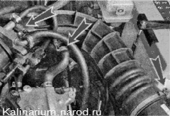
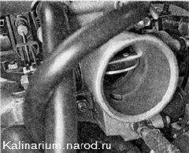
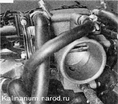
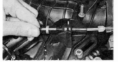

Дроссельная заслонка - регулировка приводаОтрегулировать привод дроссельной заслонки необходимо после замены троса привода, после снятия и установки дроссельного узла, а также после выполнения работ, связанных едемонтажом впускного модуля. Регулировка может также потребоваться, если двигатель не развивает максимальную мощность из-за неполного открытия дроссельной заслонки. Для выполнения работы потребуется помощник. Последовательность выполнения 1. Подготавливаем автомобиль к выполнению работы. 2. Снимаем декоративную накладку двигателя. 3. Ослабив затяжку трех хомутов, снимаем шланг подвода воздуха к дроссельной заслонке. 4. Контролируем положение дроссельной заслонки: при нажатой педали «газа» (до упора в пол) заслонка должна быть полностью открыта... ...а при отпущенной педали закрыта. Регулировка При выполнении этой операции не перетяните трос, так как при этом возможно повреждение элементов привода. 1. Плоскогубцами снимаем стопорную пластину оболочки троса привода дроссельной заслонки. 2. Перемещая оболочку троса в резиновом держателе, регулируем натяжение троса (на участке между сектором привода дроссельной заслонки и торцом оболочки допускается небольшое провисание троса). 
3. Устанавливаем стопорную пластину на место. 4. Проверяем работу привода. При необходимости повторяем регулировку. Сборка Устанавливаем снятые детали на место. |